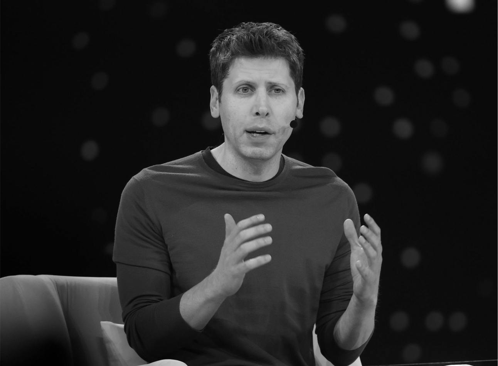

Sam Altman es un empresario y programador estadounidense reconocido en el campo de la tecnología. Fue presidente de Y Combinator, una de las aceleradoras de startups más importantes del mundo. Su trabajo ha estado enfocado en impulsar la innovación y el desarrollo de nuevas empresas tecnológicas.

Actualmente, se desempeña como CEO de OpenAI, donde lidera proyectos relacionados con la inteligencia artificial. Su objetivo principal es desarrollar tecnologías seguras y beneficiosas para la sociedad. Gracias a su liderazgo, la inteligencia artificial ha tenido un crecimiento significativo en los últimos años.